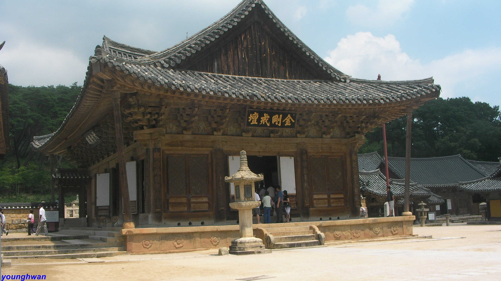

Go the the home!
Travel the Yangsan!
Introduce the Tongdosa Temple

Tongdosa Temple is a temple located in Yangsan, South Gyeongsang Province, South Korea, at the southern foot of Yeongchusan Mountain. It is a large temple that is considered a sambo temple along with Haeinsa and Songgwangsa Temple, and is called a Buddhist temple because Jajang enshrines the sarira and lyrics of Buddha's family brought from the Tang Dynasty. It is the headquarters of the 15th diocese of the Jogye Order of Korean Buddhism.
Select the place where you want to see in Yangsan
- Yangsan Tower
- Tongdosa Temple